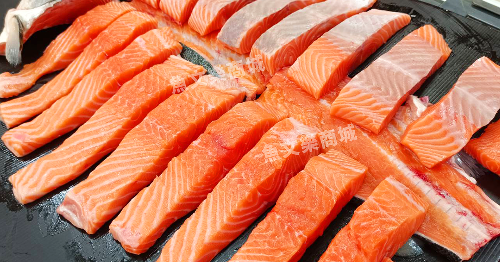
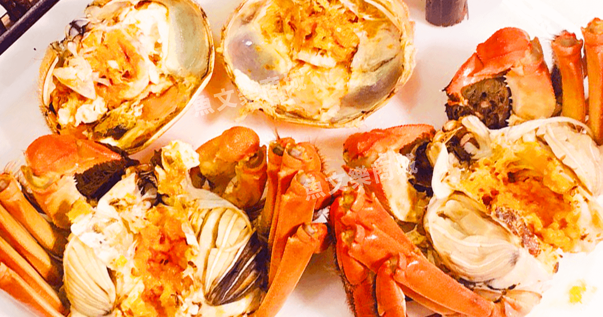
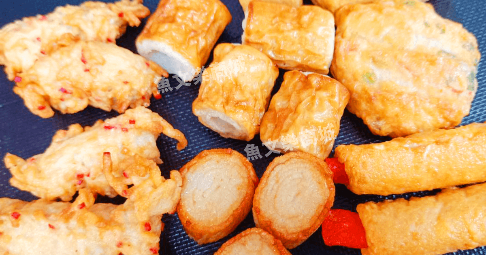

【魚文樂商城】
品牌願景與使命
「從港口到餐桌，打造一站式極鮮食尚生活。」
三十年來，我們從傳統市場的晨光浪潮中走來，歷經風浪洗禮，始終堅守對「新鮮」的極致追求。
展望未來，【魚文樂商城】將以「專業食材整合者」為核心，持續升級全方位服務：
極致嚴選，旬味傳承：深耕台灣在地現撈海鮮，同時引進全球頂級進口食材、精選高品質肉品與特色火鍋料，讓每一次下榻餐桌，都是一場極致的味蕾盛宴。
智慧供應，品質立基：結合現代化冷凍冷鏈與數位化便利服務，打破地域限制，為家庭顧客提供一站式購物體驗，為餐飲夥伴提供最穩定可靠的食材後盾。
客製尊榮，傳遞溫度：精心規劃多樣化的專屬海鮮禮盒，將海洋的饋贈轉化為最深厚的情感祝福，讓好食材成為連結人與人之間最溫暖的橋樑。
我們期許【魚文樂商城】不只是食材的供應者，更是每一位饕客與餐飲業者的信任首選——讓產地新鮮觸手可及，用嚴選品質驚艷每一張餐桌。



海鮮・肉類・冷凍食品
今天，想吃點什麼？
魚文樂商城 十二個月推薦
從家常菜到聚餐 一樣樣挑好
THE FULL COLLECTION
食材目錄
沒有找到符合的商品
試試縮短關鍵字，或切換為全部分類。
同名商品依原目錄分別保留，可用商品編號辨識。
【品牌介紹：深耕三十載，傳承新鮮與承諾】
從傳統市場的晨光到現代網路與實體門市，我們專注於極致新鮮與優質食材的精挑細選。三十年來，歷經風浪摧折與市場變革，我們從在地海鮮出發，逐步拓展至全球頂級食材與肉品品類。始終不變的，是對品質的嚴格嚴選與對客戶的誠摯承諾。
品牌發展歷程
- 1996年（民國85年）｜ 根札傳統，歷經風浪
- 第一代創辦人於傳統市場開啟海鮮事業。同年遭逢賀伯颱風重創、設施全毀，但憑藉對海鮮的專業與堅韌精神，迅速重整旗鼓、屹立不搖。
- 1998年（民國87年）｜ 重建再起，立足觀光魚市
- 隨著漁會於現址重建完成並重新開幕營運，我們正式進駐發展，奠定現今廣為人知的觀光魚市場優質海鮮口碑。
- 2003年 ｜ 世代併進，雙軌經營
- 第一代與第二代攜手立足觀光魚市場，各自發揮所長經營不同模式。結合老一輩的經驗傳承與新世代的創新思維，為品牌注入全新的發展活力。
- 2016年 ｜ 數位佈局，拓展批發
- 成立專業門市部並全面進軍網路市場，串聯線上與線下，提供現撈魚貨與各類冷凍食品的批發與零售服務。
- 2023年 ｜ 門市升級，全方位食材服務
- 擴大升級零售門市部門，產品線全面延伸至當地現撈海鮮、嚴選進口食材、高品質肉品與特色火鍋料，打造現代化、透明化的一站式購物體驗與食材解決方案。
【核心業務與專業服務】
我們不僅提供頂級食材，更是您最值得信賴的食材合作夥伴與禮盒規劃專家：
一站式多元食材供應
- 當地現撈海鮮：每日嚴選本土港口直送鮮物，鎖定極致旬味。
- 頂級進口食材：嚴選全球優質海鮮與進口食材，滿足高端料理需求。
- 精選品質肉品：優質原塊肉品與多元切片，提供穩定順暢的供貨品質。
- 豐富特色火鍋料：嚴選優質鍋物配料與火鍋食材，滿足多元烹調情境。
專屬客製化海鮮禮盒規劃
針對企業送禮、節慶餽贈與個人需求，提供專屬客製化海鮮禮盒，彈性搭配頂級珍饈，展現尊榮大氣的送禮心意。
餐飲通路專業食材批發
憑藉穩定的供應鏈與嚴格的冷鏈品質控管，長期穩定供應各類餐飲通路所需食材，服務範圍涵蓋：
- 高級飯店 / 餐廳
- 日本料理 / 頂級涮涮鍋
- 燒烤店 / 經典快炒店
YOUR INQUIRY LIST
整理需求，與我們聯繫。
加入想詢問的商品與數量，再透過 LINE 與魚文樂商城聯繫。
CONTACT US
聯絡魚文樂商城
掃描 QR 碼，或點選開啟連結。